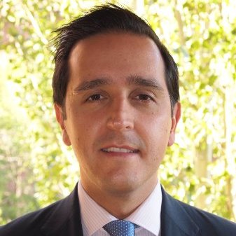

QUIENES SOMOS
ESTUDIO CARO FIGUEROA forma parte de
José Armando Caro Figueroa obtuvo el título de Abogado en la Universidad Nacional de Tucumán en abril de 1964. Casi inmediatamente después, se desempeñó en Salta como Secretario de un Juzgado Civil y Comercial; luego fue Secretario de la Corte de Justicia, Fiscal Civil Comercial y del Trabajo, y Fiscal de Estado (1973).
En 1976 se exilió en España donde amplió sus estudios de derecho en la Universidad Complutense de Madrid, asesoró a la Unión General de Trabajadores (UGT), y ejerció como abogado laboralista.
Retornado a la Argentina, ingresó a la Consejería Laboral de la Embajada de España (1984/2008), fue Secretario de Trabajo y Secretario de Economías Regionales del Presidente Alfonsín (1986/1988).
En España, después de su paso por la UGT, asesoró a varios Ministros de Trabajo del Gobierno Socialista (1988/1993); realizó estudios sobre Recursos Humanos en la Escuela de Economía y en la ESDEN.
En 1993 elaboró, por encargo del Ministro de Trabajo de la Argentina, una propuesta de reforma laboral integral.
Entre 1993 y 1997 fue Ministro de Trabajo del Presidente Menem.
Concluida esta función ministerial fundó en Buenos Aires la empresa Human Capital Consulting en donde desarrolló actividades de consultoría en derecho del trabajo, relaciones laborales y gestión de Recursos Humanos, hasta que en 2001 el Presidente Fernando de la Rúa lo designó Vicejefe de Gabinete y, más tarde, Administrador General de la AFIP (Administración Federal de Ingresos Públicos).
Dictó clases en las Universidades de Congreso (Mendoza), Tres de Febrero (Buenos Aires), de Ciencias Empresariales y Sociales (UCES – Buenos Aires), y en la Escuela de Posgrado Ciudad Argentina (EPOCA).
Escribió varios libros sobre temas jurídico-laborales: “Tratado sobre la Huelga y el Derecho de Huelga”, publicado en 2015 por Editorial LA LEY (obra en dos tomos que forma parte del Tratado de Derecho Colectivo de Trabajo, dirigido por el Profesor Raúl Altamira Gigena); “Modernización Laboral” (1997); “El Sistema argentino de Relaciones Laborales” (Editorial OIT- MTSS de España, 1994); y “La Flexibilidad Laboral” (1993), entre otros. Es autor también de varios libros centrados en Salta y su región que abordan aspectos económicos y políticos: “Cavilaciones de un Observador Solitario” (2017); “Política y violencia en la Salta de los años setenta. Memorias de una década trágica” (2016); “Alegatos sobre la Justicia. Por una Justicia independiente y eficaz” (2015); “A la búsqueda de un nuevo modelo de producción y bienestar” (2009).
Sus artículos técnicos son publicados por la Revista de Derecho del Trabajo (Editorial LA LEY), y las columnas de opinión aparecen en diarios de Salta (El Tribuno) y Buenos Aires (Clarín, Infobae).
En 2008 regresó a Salta. Desde entonces ejerce aquí su profesión de abogado independiente, dirige la consultora “Analistas de Relaciones Laborales”, especializada en la solución de conflictos colectivos del trabajo, y el Estudio Jurídico “Caro Figueroa – Abogados”.
En 2014 presidió la Comisión de Defensa del Ejercicio de la Abogacía del Colegio de Abogados de Salta. Es miembro del Consejo Consultivo de la “Fundación Federalismo y Libertad”, integra el Grupo “Salta en un Mundo en Cambio”.
acf@estudiocarofigueroa.com
Rodrigo Caro Romero obtuvo el título de Licenciado en Derecho por la Universidad Autónoma de Madrid en 1999 (título en proceso de homologación en la Universidad Nacional de Rosario) y el de Ciencias Políticas y de la Administración en 2000.
Empezó su carrera profesional (1999) en Buenos Aires en la Gerencia de Asuntos Jurídicos de la Comisión Nacional de Competencia y asesorando a empresas familiares a través de la consultora Human Capital para lo que se formó en el Instituto de Empresa (Madrid) y en la Universidad Austral (Buenos Aires).
De regreso a Madrid se incorporó a la Asesoría Jurídica del grupo Codere (2000-01) donde comenzó su andadura en el sector de las cobranzas. A continuación, encaminó su formación hacia el sector de las telecomunicaciones al inicio de la apertura a la competencia incorporándose en la Gerencia de Competencia de Telefónica de España desde donde se asesoraba al resto del grupo así como a la dirección de la compañía en el proceso de compra de empresas de diferentes sectores.
Entre los años 2002 y 2008 asesoró al Bufete Wortman Jofré-Isola Abogados en la apertura de una oficina de representación en Madrid, abrió su propio estudio jurídico y se incorporó al estudio Beltrán Gambier Abogados especializado en asuntos administrativos (destacar el ejercicio profesional en el sector del derecho del ruido) y ostentando la representación del estudio Cárdenas, Cassagne de Buenos Aires en Madrid.
Asesoró a la Federación exterior del sindicato Unión General de Trabajadores que aglutina al personal laboral de las oficinas de representación diplomática de España en el extranjero.
Desde 2006 desarrolló su actividad profesional en el sector financiero desde el subsector de cobranzas. Dirigió a más de 150 personas en Konecta (2006-10) incluyendo personal del call center, departamento de back office y legal. Abrió nuevas líneas de negocio en CTI (2010-12) focalizando la actividad de la línea de cobranzas en PYMES debido a las sinergias con las otras sociedades del Grupo (Informa –información comercial- y el propio CESCE –seguro de crédito). También ya en Intrum (2012-15) participó en los procesos de compra de carteras de créditos impagados (NPL), dirigió el proceso de judicialización masiva de expedientes (judicialización y gestión de 300.000 expedientes) y se especializó en compliance asesorando al resto de líneas de producción con una óptica desde el propio negocio.
En estas empresas no solo desplegó sus conocimientos jurídicos, sino que también se volcó en el desarrollo de aplicaciones informáticas (Java y .NET), en la formación de personal y en la gestión utilizando herramientas ajenas a priori a la profesión de abogado como el lean thinking creando procesos de trabajo y maximizando la productividad de las herramientas de trabajo.
Ha impartido diversos seminarios a través de asociaciones y Cámaras de Comercio. Posee conocimientos informáticos de nivel avanzado. Es bilingüe en inglés y español. Y un profesional con visión de negocio, pensamiento estratégico, un entusiasta de la formación y con vocación al desarrollo de nuevos emprendimientos dentro de la economía del siglo XXI.
Desde 2017 es socio director del Estudio Caro Figueroa Abogados, director del centro de coworking SLA y socio de la Consultora CF.
rcr@coworkingsalta.com• CF COWORKING SLA Nuestros servicios de coworking están dirigidos a emprendedores, profesionales autónomos, freelancers, que buscan un lugar y un ambiente para el mejor desarrollo de sus actividades y que precisan mantener reuniones con socios, clientes o proveedores. Ponemos a disposición de nuestros clientes una infraestructura y servicios adecuados, a un precio razonable. Somos, en este sentido, una alternativa rentable y práctica al tradicional sistema de alquiler de oficinas. Una opción que permite alquilar, de forma temporal, desde un puesto de trabajo hasta una sala de reuniones, con sus correspondientes servicios. Contribuimos a que nuestros clientes innoven en la forma de organizar su actividad productiva, compartiendo espacios con otros profesionales o emprendedores. Nos inspiramos en una filosofía de trabajo que fomenta la colaboración, la innovación, el talento y la comunicación.
• CF CONSULTORA DE RELACIONES LABORALES Ofrecemos a las organizaciones vinculadas con el mundo del trabajo (empresas, sindicatos, cámaras empresarias y administración pública) un amplio y especializado servicio de estudios y análisis de todos los aspectos relacionados con la representación, la negociación colectiva, la acción sindical en la empresa y los conflictos colectivos seguidos o no de huelga. Nos especializamos en promover canales de diálogo entre los actores sociales, en formalizar medios alternativos de solución de los conflictos, y en procurar acuerdos que consoliden la paz social. Para ello, ayudamos a las organizaciones a definir estrategias de negociación y comunicación, a montar observatorios y herramientas de seguimiento, a formar a los encargados de las relaciones colectivas de trabajo.